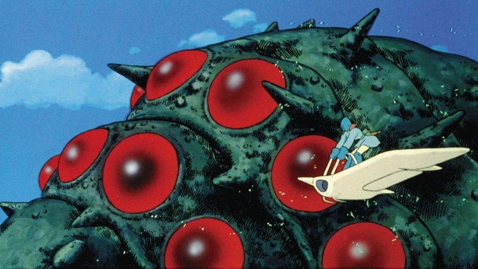

Humans are not the point and purpose of the planet.
We will face this reality honestly and learn how to live with it. We realize that the current and upcoming crises cannot be reduced to a set of problems in need of technological or political solutions. We believe that the roots of the current and upcoming crises lie in the stories we have been telling ourselves.
We're destroying the world because we are, in a very literal and deliberate way, at war with it. People need more than to be made to feel stupid and guilty. They need more than a vision of doom. They need a vision of the world and of themselves that inspires them.

There is nothing new, everything has been done, all philosophic and social theoretical issues have been addressed, and all that is left is to recycle, recombine, and play with these in new ways.
| Personal Responsibility | Political Action | Systemic Change |
The end of the human race will be that it will eventually die of civilisation.
—Ralph Waldo Emerson
vegan
A way of living which seeks to prevent all forms of exploitation of, and cruelty to, other animals for food, clothing or any other purpose.
Specisism is discrimination on the basis of species, oppression and judgment of an animal on the basis of that animal's species or that animal's non-membership in a species. The belief in human superiority over other animals or certain nonhuman animals' superiority over others.
Animal Rights is the position that the interests of nonhuman animals, including their interest in not suffering, should be afforded the same consideration as the interests of humans and that nonhuman animals have rights and inherent value independent of their us.
animal rights
- Animal Liberation Front: An international, leaderless resistance that engages in removing animals from laboratories and farms, destroying facilities, arranging safe houses and veterinary care, and operating sanctuaries where the animals subsequently live.
- Animal Advocacy: Promotion of the interests of animals, generally. Includes work for animal rights and animal welfare.
- Commodification: The conversion of a living being, principle, or natural environment into an "object" that is used, exchanged, or consumed for profit or other desired gain.
- Debarking: The surgical removal and manipulation of tissue in a dog's vocal cords to drastically quiet his or her natural bark. Debarking does not address the underlying reasons that a dog may be barking excessively, and the dog will continue to bark, albeit more quietly or silently.
- Draize Test: Infamous and excruciating eye-irritation test for household products and cosmetics in which drops of a substance are placed in the eyes of rabbits, causing the animals ulcers, blindness, and other injuries before they are ultimately killed.
- Flowerpot Technique: A technique used in sleep deprivation studies designed to allow NREM sleep but prevent REM sleep.
- Forced Molting: The egg-industry practice of artificially inducing hens to molt by depriving them of food for several days to two weeks when their egg production has declined.
- Rape Rack: The industry term referring to the contraptions in which cows and pigs are restrained while they are forcibly inseminated.
- Veal Crate: Small crate in which a calf being raised for veal is confined and tied up. The calf's movement within the crate is intentionally restricted to limit the strengthening of muscle, and an insufficient diet is provided intentionally to keep the cow anemic.
anarchy
Anarchy means not necessarily the absence of order but an absence of rule.
Anarchism is a social movement that seeks liberation from oppressive systems of control including but not limited to the state, capitalism, racism, sexism, ableism, speciesism, and religion.
Anarchists wish to create a society based upon individual freedom and voluntary cooperation. Anarchism is founded on the observation that since few men are wise enough to rule themselves, even fewer are wise enough to rule others.
Anarchists advocate a self-managed, classless, stateless society without borders, bosses, or rulers where everyone takes collective responsibility for the health and prosperity of themselves and the environment.
To be free is to allow each one to live their lives in their own way as long as each allows all to do the same. Anarchists fight for a society which respects individuals and their freedom, and believe in peace at any price — except at the price of liberty.
Harmony in such a society is obtained, not by submission to law, or by obedience to any authority, but by free agreements concluded between the various groups, territorial and professional, freely constituted for the sake of production and consumption, as also for the satisfaction of the infinite variety of needs and aspirations of a civilized being.

The individual cannot bargain with the State. The State recognizes no coinage but power: and it issues the coins itself.
Ursula K. Le Guin, The Dispossessed
green anarchism
- Anarchy: A word that comes from the Greek, and signifying "without government", the state of a people without any constituted authority.
- Health: A state of complete physical, mental and social well-being and not merely the absence of disease or infirmity.
- Dark Greens: The ones who believe that environmental problems are an inherent part of industrialized civilization, and seek radical political change.
- Light Greens: The ones who see protecting the environment first and foremost as a personal responsibility, focusing on environmentalism as a lifestyle choice.
- Veganism: A philosophy and way of living which seeks to prevent all forms of exploitation of, and cruelty to, other animals for food, clothing or any other purpose.
- Ecofeminism: Ecofeminist thinkers draw on the concept of gender to theorize on the relationship between humans and the natural world.

solarpunk
Sustainability, longevity, and balance with an emphasis on renewable energy.
A technophilic movement centered on using and being affected by the use of renewable resources, recycling and repurposing with a focus on decentralisation, community activism, social justice and civic empowerment. A recognition that economic, social, and ecological injustices are all deeply inter-connected.
Embracing approachable, human-scale, or knowable, technology and envisioning a world in which the detritus of consumer culture is appropriated and repurposed toward the reconstruction of a devastated ecology.
Permaculture is the science and practice of creating semi-permanent ecosystems of nature. The resilience of any such ecosystem is equal to it's diversity + interconnectedness. Permaculture design is a system of assembling conceptual, material and strategic components in a pattern which functions to benefit life in all its forms. It seeks to provide a sustainable and secure place for living things on this earth.
Punk is a rejection of mainstream, corporate mass culture and its values. It manifests through direct action, such as protest or demonstration disruption, political violence, ecotage, street barricades, squatting, pirate radio, off-grid energy, graffiti, vandalism and public and business property destruction.
incoming(1): merveilles
Last update on 14U05, edited 7 times. +26/38fh ----|-